B4Nさんが卒研につかうサンプリングモアレ法の予備実験をFの部屋でやっていました。
M2M4先輩が興味深そうに
ウロウロ
M4先輩が先日改造したプリンタの動作を確認中
投影は天井プロジェクタから
画像取り込み確認
まずはあり合わせでシステム確認
3次元プリンターの梱包材が対象
上手く行ったとのこと
基本システムはOK
え？
51年前にはシュリーレン法で使った鏡は存在していた

あの鏡の製造年はまだ不明
| ・ サンプリングモアレ法 (R02.07.03) | |||
B4Nさんが卒研につかうサンプリングモアレ法の予備実験をFの部屋でやっていました。 |
|||
|
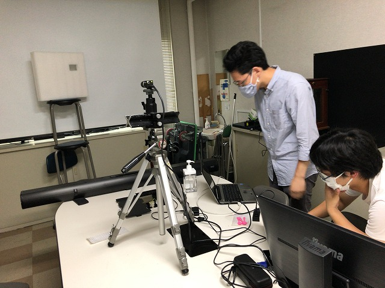
M2M4先輩が興味深そうに |
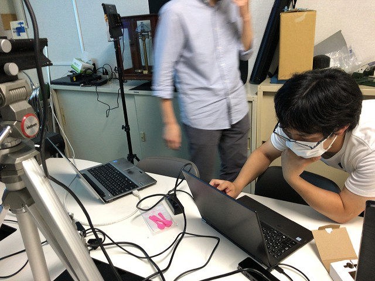
ウロウロ | ||
|
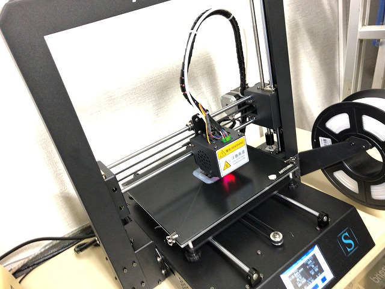
M4先輩が先日改造したプリンタの動作を確認中 |
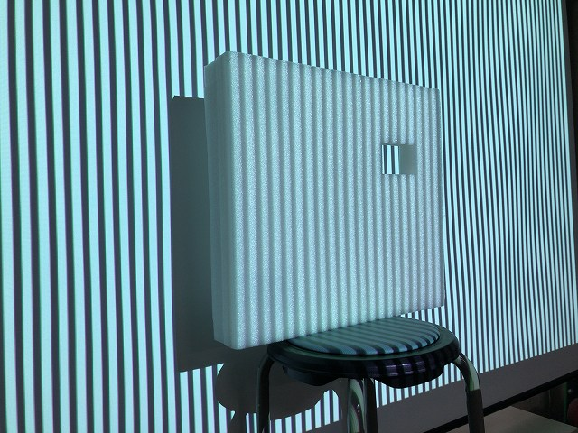
投影は天井プロジェクタから | ||
|
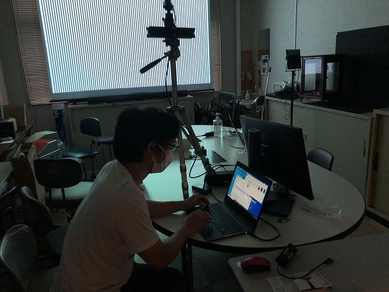
画像取り込み確認 |
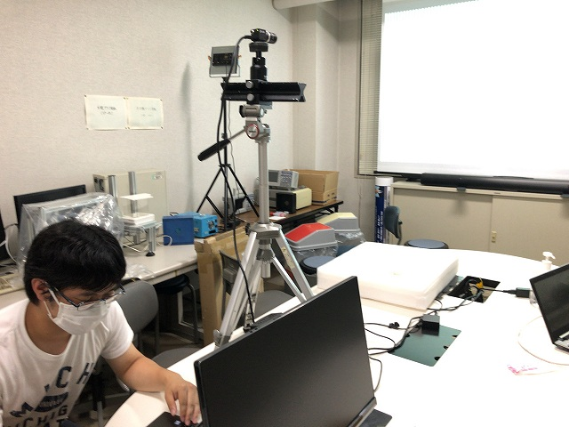
まずはあり合わせでシステム確認 | ||
|
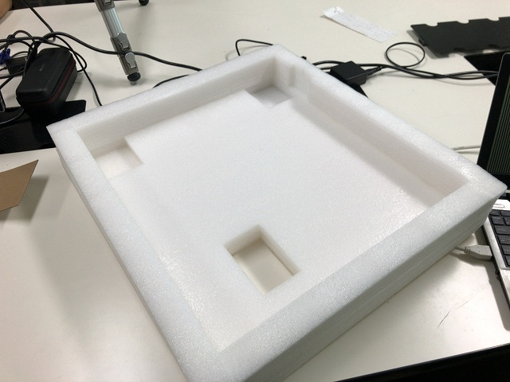
3次元プリンターの梱包材が対象 |
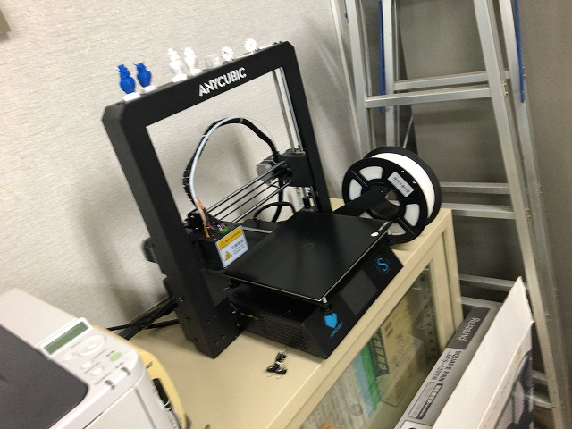
上手く行ったとのこと | ||
|
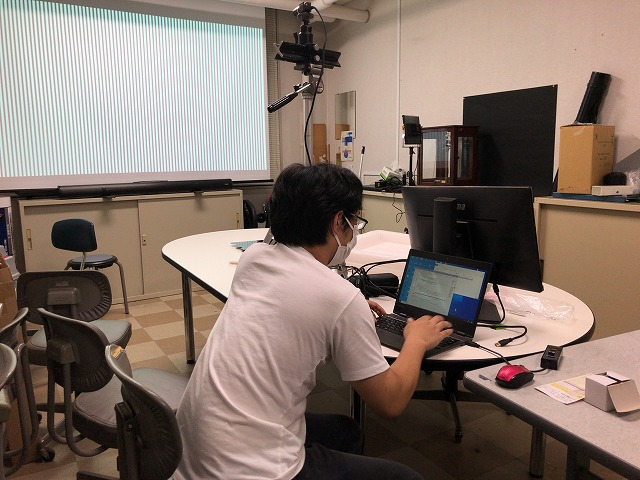
基本システムはOK |
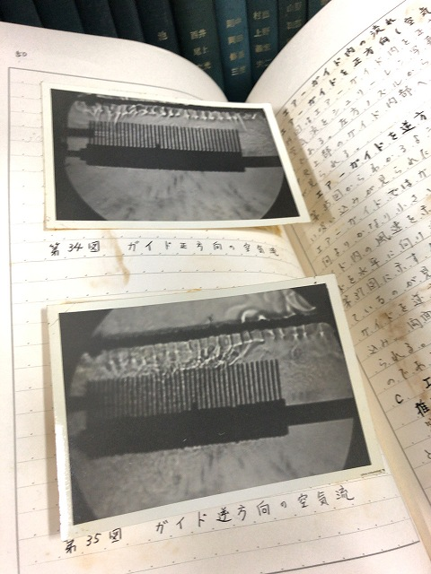
え？ | ||
|
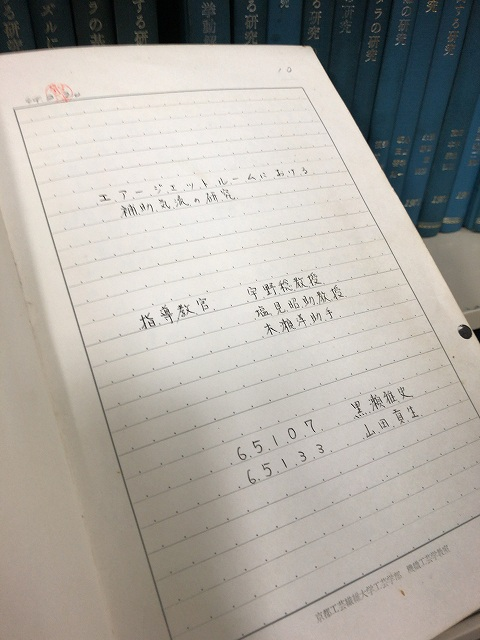
51年前にはシュリーレン法で使った鏡は存在していた |
あの鏡の製造年はまだ不明 | ||